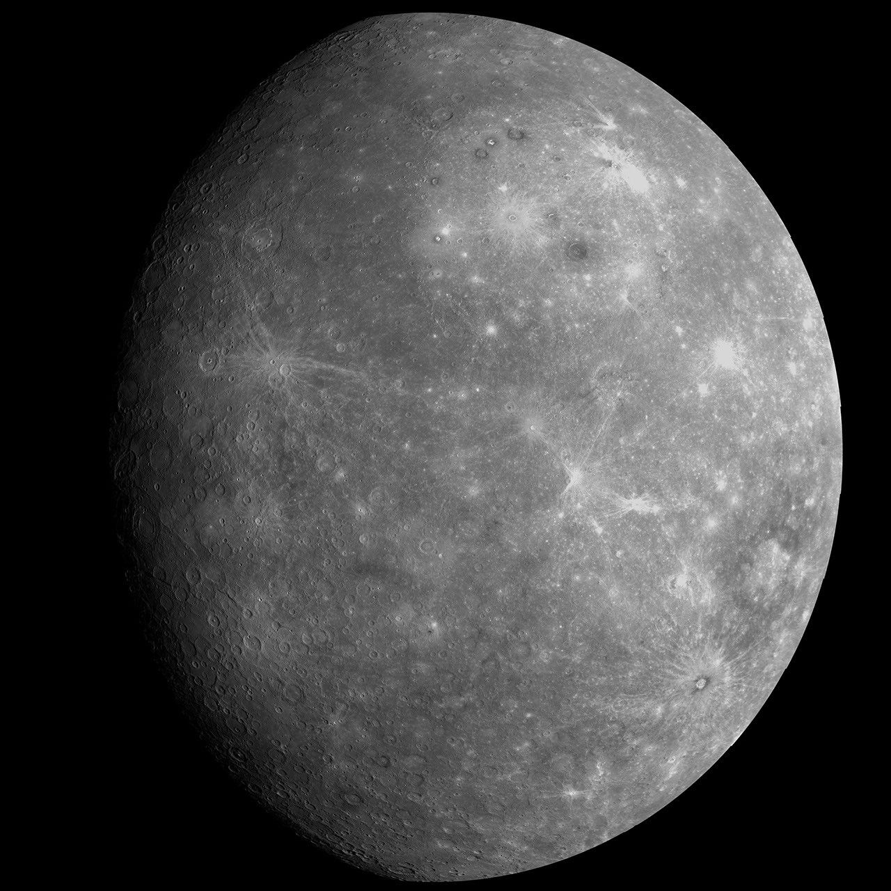

ÓRBITAMERCURIO
El mundo más veloz del sistema solar. Su superficie gris y rocosa experimenta variaciones extremas de temperatura entre el día y la noche.
Diametro
4.879 kmGravedad
3,7 m/s²Duracion del dia
58,6 diasTemperatura media
167 °C